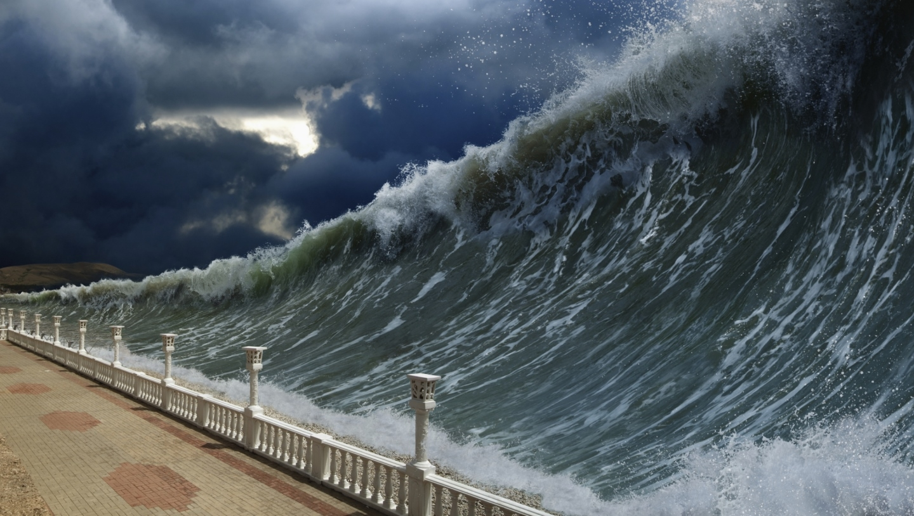

A tsunami is a series of powerful ocean waves caused by the sudden displacement of water, typically triggered by undersea earthquakes, volcanic eruptions, landslides, or meteorite impacts. These waves travel at high speeds across the ocean with long wavelengths but low heights, making them difficult to detect in deep water. As they approach coastlines, their speed decreases, and their height increases dramatically, causing devastating flooding and destruction. Warning signs include ground shaking, unusual ocean behavior, and water rapidly receding from the shore. Notable tsunamis, such as the 2004 Indian Ocean and 2011 Tōhoku disasters, highlight their destructive potential. Early warning systems, education, and evacuation plans are crucial for reducing their impact.
TSUNAMI WAVES
